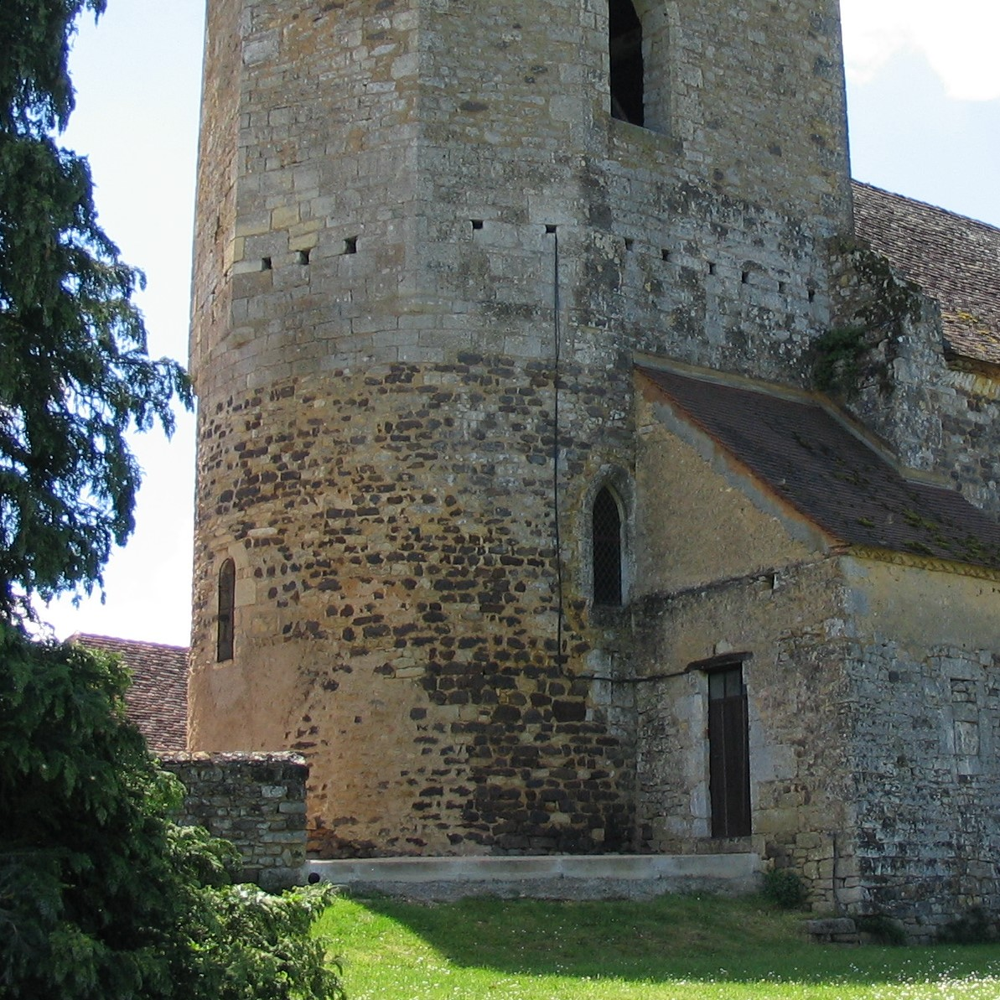

Les Eglises à visiter
Notre patrimoine coup de coeur...

Eglise Abbatiale Saint Sour
Bâtie au VIe siècle sur un emplacement choisi par l’ermite saint Sour, l’église abbatiale Saint-Sour de Terrasson-Lavilledieu connaît pendant des siècles une histoire mouvementée. L’église abbatiale Saint-Sour est bâtie primitivement au VIe siècle. À cette époque, selon la légende, le roi bourguignon Gontran souhaite récompenser l’ermite Sour pour l’avoir guéri de la lèpre et il lui propose de bâtir un monastère. L’ermite fait alors s’envoler deux colombes et décide que le monastère sera bâti à l’endroit où les volatiles se seront posés. Lorsque c’est fait, l’ermite s’exclame : « terra sunt », ce qui signifie « elles sont à terre » et donne le nom de la commune de Terrasson. Le monastère devient dès lors un point d’évangélisation.
D'autres églises qui pourraient vous intéresser...
L’église Saint-Léon, située dans le quartier Saint-Jean d’Anglet, doit son nom aux circonstances originales de sa construction. Au XVIe siècle, le chantier d’extension des remparts de Bayonne oblige les ouvriers à démanteler une chapelle du XIIe siècle située dans le quartier Saint-Léon. Les pierres de la chapelle sont acheminées jusqu’à Anglet pour donner naissance à une nouvelle église, que l’on baptise en toute logique Saint-Léon. L’église Saint-Léon est typique de l’architecture des églises basques du diocèse de Bayonne, avec sa nef unique, ses galeries, son porche couvert en saillie et son mur à pignon abritant les cloches. L’édifice est entouré de son cimetière aux tombes originales." alt="Eglise Saint Leon" width="300" height="200"> L'Eglise Saint-Pierre
L'abbaye a été fondée au IXème siècle par Rodolphe de Turenne, archevêque de Bourges. Au début du XIIème siècle la communauté fut affiliée à l'ordre de Cluny et l’ensemble monastique fut reconstruit. Il subit les assauts des protestants lors des Guerres de Religion et l’église abbatiale fut transformée en temple. C'est un édifice aux proportions majestueuses, de style roman Limousin, en grès ocre pâle, construit selon les plans d'une grande église monastique de pèlerinage. Le clocher de plus de 30 m de hauteur a été construit au XIVème siècle, pendant la guerre de Cent Ans. Il servait à la fois de tour de guet et de donjon-refuge pour le monastère." width="300" height="200">